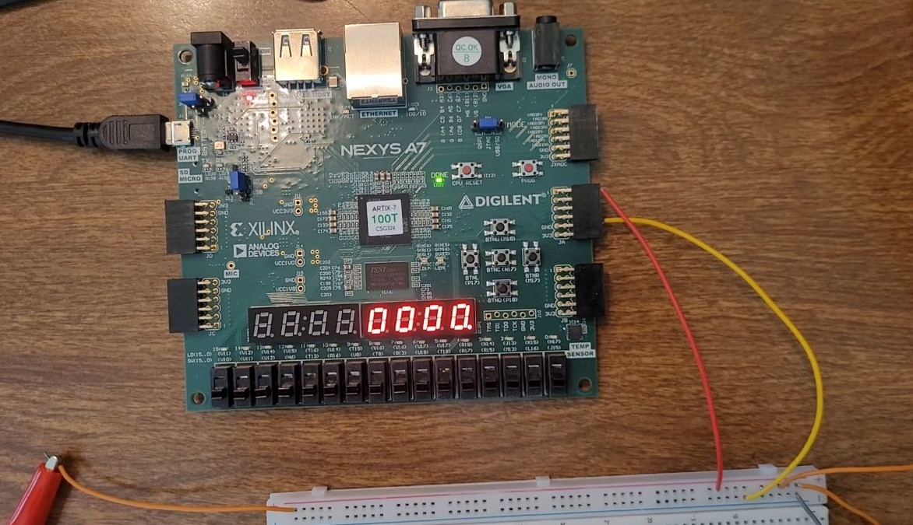

Outline
- Project Description
- Period Counter
- Division Circuit
- Binary-to-BCD Converter
- Frequency Counter
- Testing
Project Description
The goal of this project is to develop an auto-scaling frequency counter in hardware using SystemVerilog. The seven-segment display of an FPGA board is used to show the measured frequency. The input signal is a digital periodic square wave. The frequency counter supports frequencies in the range of 1 Hz to 10 kHz, while maintaining 4 significant figures of accuracy. The development board used is the Nexys A7, which contains the Artix 7 XC7A100T-1CSG324C FPGA. The system can be broken up into three separate modules.
Period Counter
The period counter is used to measure the period between two rising edges. The inputs to this module include the clock, reset, start, and signal bits. The output includes the ready and done tick signals, as well as a 20-bit representation of the measured period. Figure 1 shows the symbol for the period counter with the corresponding inputs and outputs.

A finite state machine with a datapath (FSMD) can be used to implement the circuit. The state transition diagram is shown in Figure 2, while the datapath is explained. Once the “start” bit is asserted, the system transitions from the “Idle” state to the “Wait” state. Once the first edge is detected, the register storing the time in microseconds and the register holding the number of clock pulses are reset. The state then transitions to the “Count” state. The circuit waits for the second rising edge, while the two counting registers are updated. The clock pulses register updates every clock cycle. The microseconds register increments once every 100 clock cycles (100 MHz clock corresponds to 1 μs resolution). Once the second rising edge is detected, the module transitions to the “Done” state, where the “done” signal is asserted. After one clock cycle, the machine returns to the “Idle” state and counting ends.

Division Circuit
The division circuit is needed to compute frequency by performing division operations, particularly those involving measuring periods. The inputs to this circuit include the clock, reset, and start signals, as well as the divisor and dividend registers of configurable width. The outputs of the circuit include the ready and done tick signals, as well as the quotient and remainder registers. Figure 3 shows the symbol for the division circuit module with the corresponding inputs and outputs.

The long division algorithm used is analogous to the long division operation between two binary numbers. An FSMD can also be used for this circuit. The flow of the datapath is as follows:
- Extend the dividend by appending zeros to match the required width
- If the current partial dividend is greater than or equal to the divisor, subtract the divisor and append a ‘1’ to the quotient; otherwise, append a ‘0’
- Shift the partial result and bring in the next dividend bit
- Repeat until all dividend bits are processed
The state transition diagram is shown in Figure 4. Once the “start” bit is asserted, the state transitions from the “Idle” state to the “Op” state. When only one operation remains in the division process, the machine transitions to the “Last” state. The quotient and remainder registers are then finalized. After a clock cycle, the machine transitions to the “Done” state, where the “done” signal is asserted. The system immediately returns to the “Idle” state.

Binary-to-BCD Converter
The purpose of this circuit is to convert incoming binary data to binary coded decimal (BCD) format. In this format, each group of 4 bits represents a decimal digit. This conversion simplifies the operation of the seven-segment display. In addition, the circuit also determines the location of the decimal point for the frequency counter. The inputs to this module include the clock, reset, and start signals, as well as the 24-bit binary data. The outputs include the ready and done ticks, the 4 significant figures used for the frequency counter in BCD, and the decimal point location. Figure 5 shows the symbol for the converter with the corresponding inputs and outputs.

The conversion circuit uses yet another FSMD. Four BCD digit registers form a larger register. The digit registers are initially empty. The following process applies to the input binary data along with the four registers:
- For each BCD digit register, add 3 if the digit is greater than 4
- Shift the entire BCD register to the left one position and shift the most significant bit of the binary input into the least significant bit of the BCD register
- Repeat steps 1 and 2 until all binary bits have been shifted into the BCD register
The state transition diagram is almost identical to the division circuit state machine, except for minor changes as shown in Figure 6. The machine transitions from the “Idle” state to the “Op” state when the “start” bit is asserted. Once all input binary bits have shifted into the entire BCD register, the system transitions into the “Alter” state. In this state, the 4 significant figures for the frequency counter are extracted, and the decimal point position is determined. The machine transitions to the “Done” state, where the “done” signal is asserted. The system immediately returns to the “Idle” state.

Frequency Counter
The three modules discussed above, along with a separate seven-segment display module, can be combined to form the frequency counter. The display module takes the BCD outputs and uses time division multiplexing to display all four digits at the same time. The inputs to the top-level module include the clock, start and reset push buttons, and the square wave input signal provided by a function generator. Figure 7 shows how all subsystems (excluding the display module) are wired together. The dividend is set to 1,000,000,000 (decimal) to preserve additional significant figures during division, even though the period is measured in microseconds. Also note that the remainder output terminal is not connected.

The main control of the frequency counter is implemented using a finite state machine (FSM). The state transition diagram of the FSM is shown in Figure 8. The system starts in the “Idle” state and transitions to the “Count” state when the “start” button is pressed. The machine transitions to the “Frq” state when the period counter finishes its operation. Once the division circuit finishes, the state moves to “B2B” for the binary-to-BCD converter. Once the converter finishes, the system returns to the “Idle” state. The outputs of the FSM block are the “start” signals needed by the modules to commence operation. The inputs to the FSM are the “ready” and “done” signals that each module sends.

Testing
Once all the hardware was developed, the code was verified using a testbench simulation to evaluate performance across various input frequencies. The main goal of the testbench was to check the values of the BCD digits and the decimal point location for various inputs. The hardware was then synthesized and implemented on the FPGA as shown in Figure 9.

Video 1 shows a live test of the auto-scaled frequency counter stepping through multiple frequencies. The frequencies tested included 2 kHz, 200 Hz, 20 Hz, and 2 Hz. Once the square wave was generated, the “start” button was pressed. Between each test, the “reset” button needed to be pressed. There are some discrepancies in the measured data. Some of these inconsistencies can be explained by the low-cost function generator (~$30).
Since the period counter counts in microseconds, there is measurement error expected at the larger frequencies. For example, at the largest frequency that can be output (9.999 kHz), the error can reach up to approximately 0.5% in this range. This error falls to about 0.05% at frequencies around 999.9 Hz. The lower the frequency, the less error in the reading. Although the FPGA clock has a 10 ns period, this implementation measures time in microseconds for simplicity. The error could be reduced by increasing the time resolution to the nanosecond range.
↑ Return to Outline